Fractal wallpapers
This project began when my three-year-old daughter took an interest in the fractal wallpapers that had been rotating on my desktop for years. But after her detailed examination of all 500, it turned out she only liked about five specific darker pink ones. A Google search for "pink fractals" was surprisingly barren of good options.
I started thinking about how to procedurally generate a diverse set of artistic fractals subject to constraints like color, shape, or rendering styles. Classification was one of the first big successes of modern convolutional networks, and given enough training data, a network can do quite a good job of answering a question like "how good is this wallpaper, on a scale of 1 to 4?" Coupled with a fairly extensive search and rendering engine, that became the first version of the fractal-wallpapers project. Below is a terse outline.
First, pick a starting escape-time fractal:
Then, starting at a point near the boundary, walk deeper, guided by a location judge trained to estimate how beautiful the geometry is at each location. Maneuvers like "switch to the Julia set for this point and descend it from the top" or "find a nearby minibrot" turn out to be very useful for finding good locations.
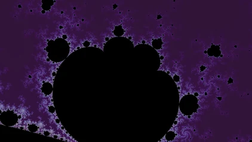
1. start at the boundary
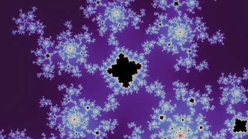
2. find a nearby minibrot
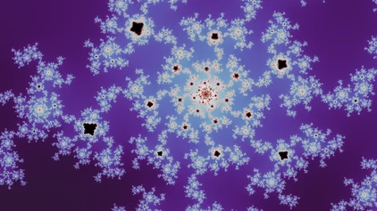
3. descend
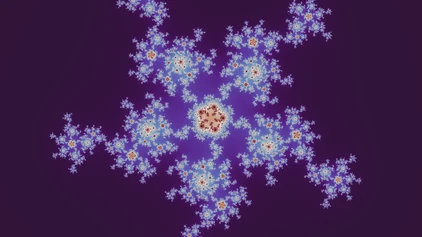
4. switch to its Julia set
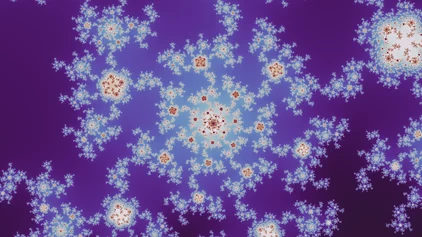
5. descend
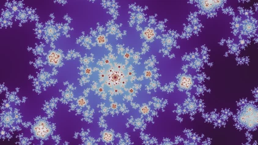
6. descend
At each location that the location judge finds to be high-quality, search across palettes and rendering modes for the most beautiful wallpapers, according to the wallpaper judge, which is trained on explicit labels.
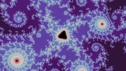
the location
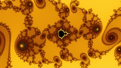
smooth
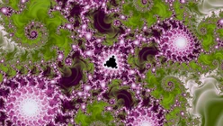
tia
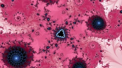
threads
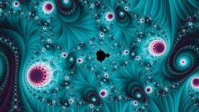
stripe
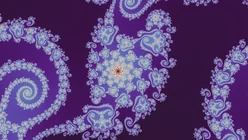
the location
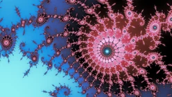
smooth
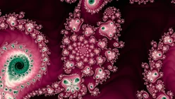
tia
Finally, curate a gallery of a given size from all the candidates, possibly subject to some constraint like "fractals with pink and blue hues". The chosen images should be diverse in color, geometry, palette, rendering mode, and fractal family, and can follow other constraints such as a cap on how many spirals get in.
And here is the final darker pink picks, as chosen by my daughter:

Fractal explorer
Once I was reasonably happy with the fractal galleries I produced, I thought about putting them online as a simple zip of wallpapers. But the Rust code behind fractal-wallpapers carried over to the web almost directly, as what is now the Mandelnaut Explorer. Moving around and exploring the areas around the wallpaper locations was fun, and that motivated a more polished writeup and interface than just "here's a zip of 1,000 fractal wallpapers."
Deep zoom rendering
Originally, I wasn't planning to handle anything beyond 64-bit floating point arithmetic. The whole point of the gallery is that the search is automatic and fast, so it can try millions of locations and keep the best. But some of the most beautiful fractal artwork lives in the deepest parts of these fractals. So although most of the gallery sits in the shallow regions, I eventually extended the renderer to work much deeper, though not as deep or as fast as dedicated deep-zoom renderers like Kalles Fraktaler and Fraktaler 3. Along the way I learned a lot of fractal mathematics, including properties that are directly useful for fractal artwork, like the minibrot twins behind nested descents and Tan Lei's similarity between the Mandelbrot and Julia sets. Videos that zoom into a location are also a great way to explore the detail around it:
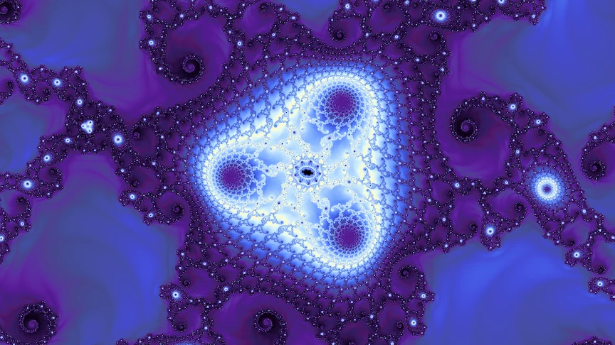
Midway

More deep zoom videos are on the Deep zoom videos page.
Future work
If there are features you'd like, or bugs to report, open an issue on GitHub: fractals for the explorer and this site, and fractal-wallpapers for the wallpaper pipeline. I haven't worked out how to take gallery submissions yet, but every link on this site should work and be freely shareable.
To browse the finished wallpapers, open the Gallery tab in the fractal explorer, or get them at full size from the wallpaper packs.